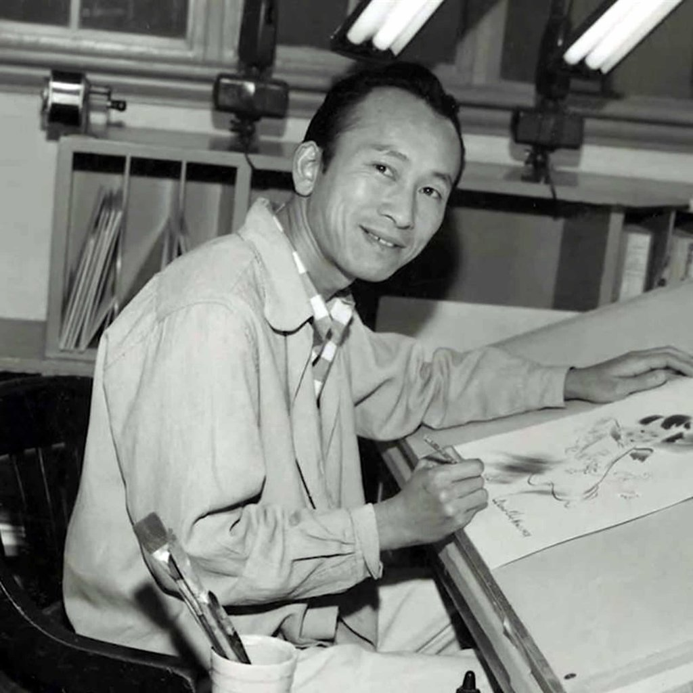

Tryus Wong Story
Tyrus Wong was a Chinese-born American artist who paved the way for the Asian community and artists alike.
Tyrus Wong was a Chinese-born American artist who paved the way for the Asian community and artists alike.